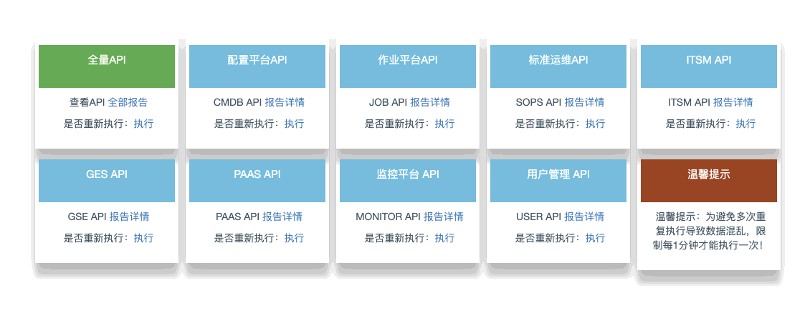
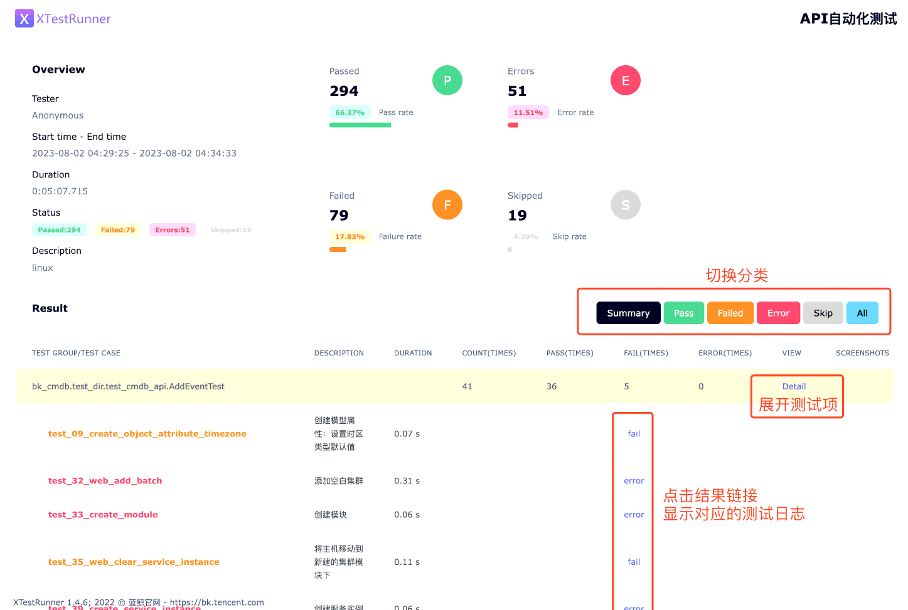

欢迎体验蓝鲸自动化 API 测试工具。
部署 bk-apicheck¶
更新 helm 仓库缓存：
helm repo update
helm search repo bk-apicheck --version 2.0.6
NAME CHART VERSION APP VERSION DESCRIPTION blueking/bk-apicheck 2.0.6 2.0.6 A full stack chart for Apicheck Enterprise prod...
修改 environments/default/version.yaml 文件，配置 bk-apicheck charts version 为 2.0.6：
sed -i 's/bk-apicheck:.*/bk-apicheck: "2.0.6"/' environments/default/version.yaml
grep bk-apicheck environments/default/version.yaml # 检查修改结果
bk-apicheck: "2.0.6"
更新 bk-apicheck:
helmfile -f 05-bkapicheck.yaml.gotmpl sync
等待命令执行完毕，结尾输出如下即为更新成功：
UPDATED RELEASES: NAME CHART VERSION bk-apicheck blueking/bk-apicheck 2.0.6
使用 bk-apicheck¶
1. 访问地址¶
目前预置的域名为 bk-apicheck.$BK_DOMAIN。
配置 DNS 或 hosts 成功后，需要在浏览器输入域名访问。暂时无法在蓝鲸桌面打开。
访问界面如下图所示： 
{kind=link}
2. 界面用法¶
注意
在执行任务时，bk-apicheck 会调用对应平台的 API 创建并删除数据。鉴于平台大都实现为了软删除（标记删除，但记录保留），因此会导致你新增资源的自增 ID 不是从 1 开始。
我们提供了 “全量 API” 模式和一些系统的单项测试，都是独立测试和报告的。所以全量执行后，不会出现单项的报告。
提示
如果在执行 “全量 API” 测试时，尚未部署 监控平台。可以在部署完成后在 “监控平台 API” 卡片里点击 “执行” 进行单独测试。
点击每个卡片里的 “执行” 按钮，即会发起测试任务。测试完毕后会自动跳转到报告页。全量测试耗时 8-15 分钟，其余单平台测试每个 1-3 分钟。
下图为一个测试报告： 
{kind=link}
注意
- 当报告页提示“您访问的报告不存在”：说明尚未开始执行测试。可以重新点击“执行”按钮试试，并登录中控机检查 pod 是否产生异常日志。
- 当报告页白屏：说明正在执行测试，历史报告已被清空。可以稍等几分钟刷新页面。
停止 bk-apicheck¶
目前 bk-apicheck 尚无鉴权。因此在测试完毕后，应该尽快停止此服务，以避免潜在的信息泄漏风险。
helmfile -f 05-bkapicheck.yaml.gotmpl destroy
下一步¶
部署容器管理套餐。